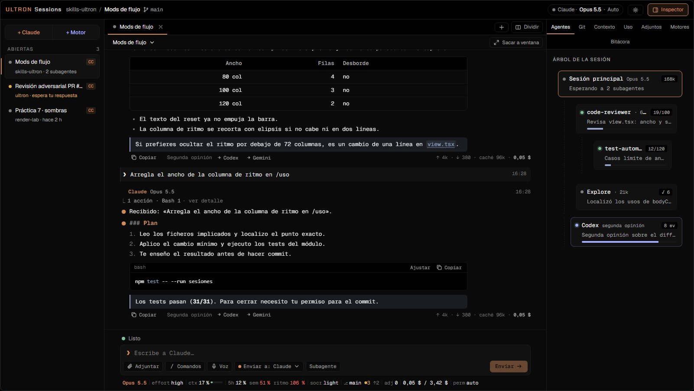
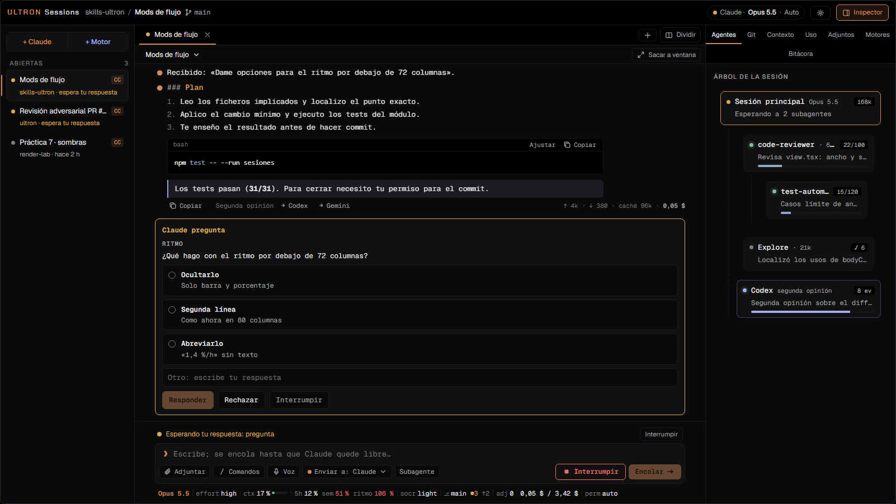
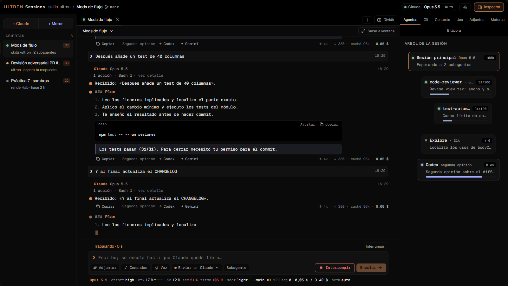
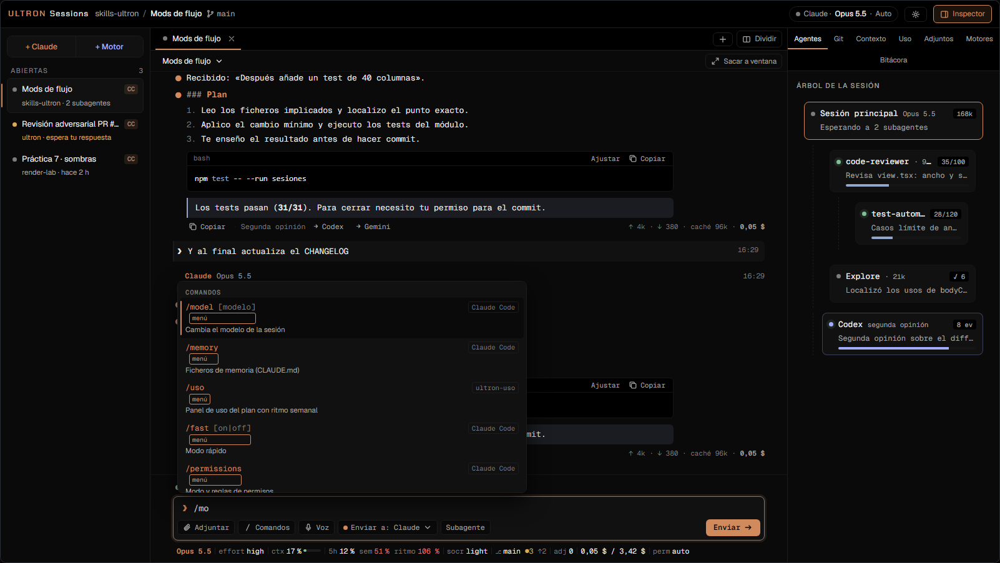
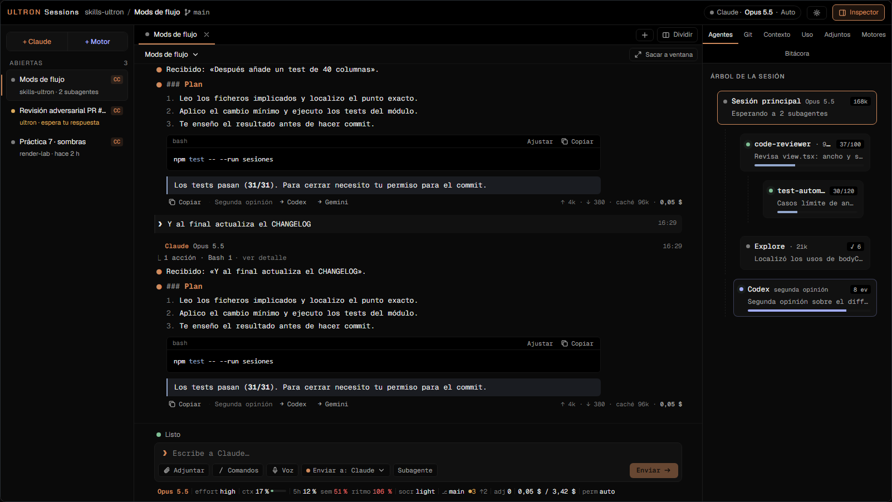
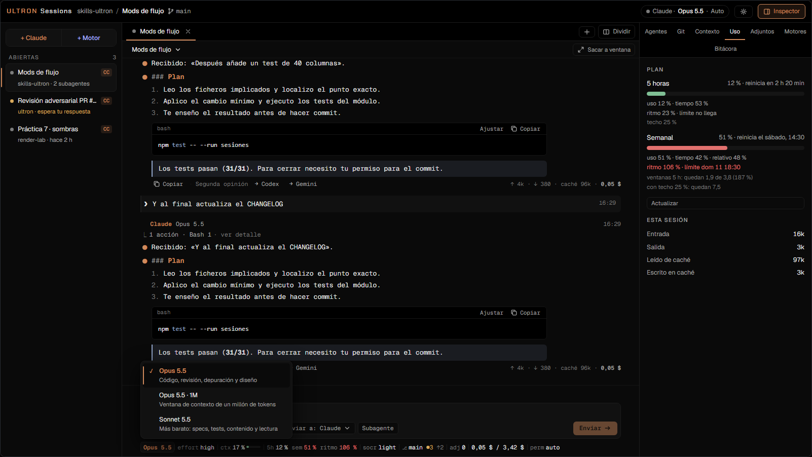
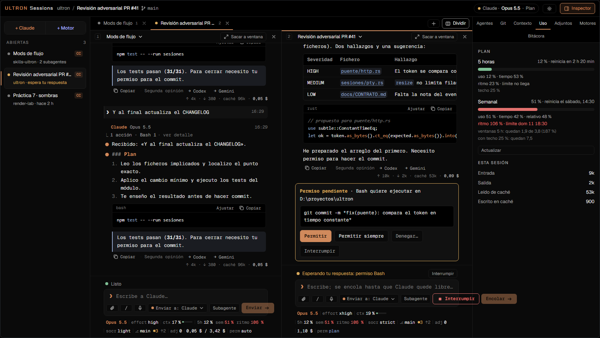
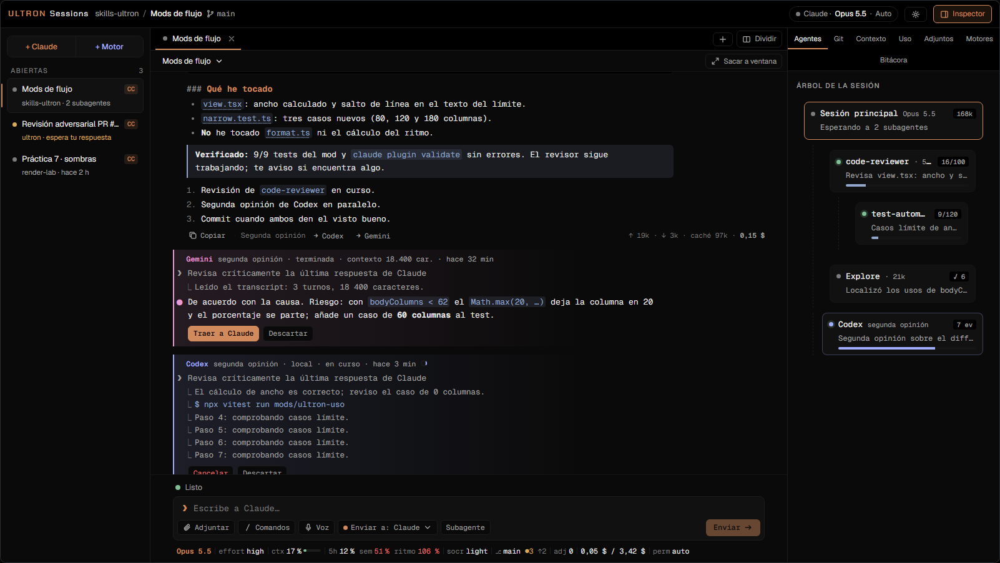
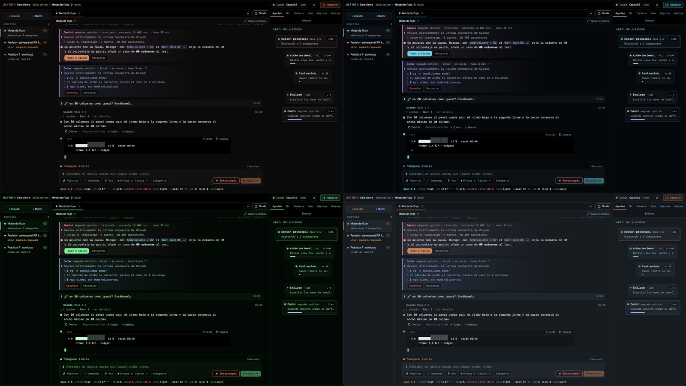

Lo que hace la ventana.
Nueve cosas que la terminal no da, sin cambiar el motor: todo lo que ves sale de la sesión real de Claude Code.
Markdown rico y respuesta en streaming.
Chat con Markdown rico: tablas, bloques de código y respuesta en streaming mientras Claude escribe.

Tarjetas con botones, sin salir del chat.
Preguntas, planes y permisos de Claude como tarjetas con botones, sin salir del chat.

Escribe mientras trabaja.
Los mensajes esperan en una cola y se envían en orden, sin duplicados.

Todos los comandos desde el chat.
Todos los slash commands desde el chat, incluidos los menús de la TUI.

Árbol de la sesión.
Cada subagente con su contexto, sus turnos y su tarea.

El estado de la sesión, en una línea.
HUD inferior: modelo, effort, contexto, cuota de 5 h y semanal con ritmo, rama de git y coste.

Paneles divididos o ventanas separadas.
Varias sesiones a la vez en paneles divididos o en ventanas separadas.

Codex o Gemini, de vuelta a Claude.
Manda la última respuesta a Codex o Gemini y trae su resultado a Claude.

Siete temas.
En la captura, cuatro de ellos: Obsidiana, Vacío, Fósforo y Acero.

La CLI corre de verdad. Sessions la lee.
Claude Code se ejecuta tal cual en un PTY. Sessions no sustituye nada: lee lo que la CLI pinta y lo que escribe en disco, y recibe por HTTP local lo que la pantalla no cuenta.
- PTY. Claude Code corre de verdad en un pseudoterminal: misma CLI, mismos hooks, misma configuración.
- Pantalla emulada. Sessions lee la pantalla de la TUI con un emulador
vt100y el transcript JSONL que la CLI escribe en disco. - Mod propio.
ultron-puentele pasa por HTTP local los eventos de streaming, permisos y preguntas. - Restauración. Las sesiones abiertas se restauran al reiniciar la app.